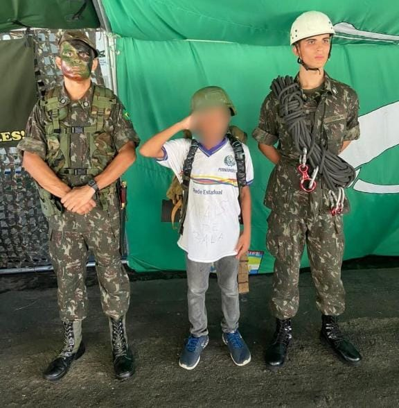
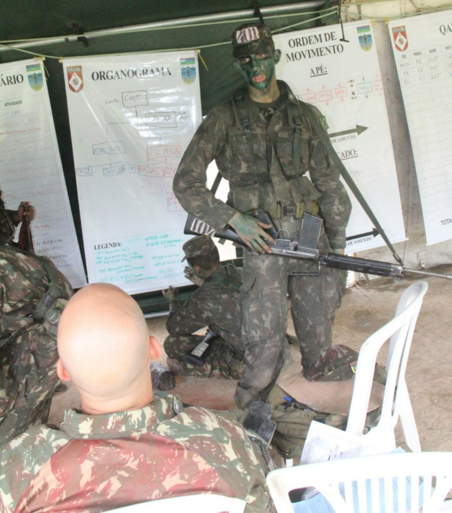
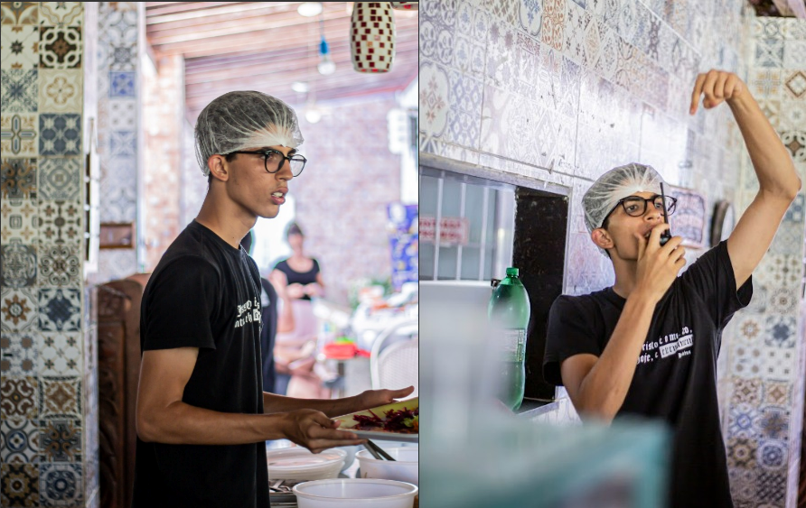

Experiências nas Forças Armadas
Aprendizados gerais
No ano de 2024 tive o priviégio de servir no Centro de Preparação de Oficiais da Reserva do Recife. Durante esse período desenvolvi algumas qualidades que são altamente valorizadas no meio militar: Liderança, gestão de tempo, zelo, disciplina, entendimento da hierarquia, foco na missão, oratória, preparo físico, gestão de times, entre outros. Dentro do aquartelamento, pude entrar na Arma de Comunicações, setor responsável, como o próprio nome diz, pela manutenção das comunicações e ligações entre outras Armas e Setores. Nessa especialização, pude crescer nos rankings do CPOR, e através de esforço e disciplina, consegui ser o primeiro colocado geral dos 170 alunos de CPOR e o primeiro colocado na minha área. Os critérios foram as provas realizadas no decorrer do ano, aptidão física, um trabalho de conclusão e conceitos atitudinais avaliados pelos meus instrutores.No Exército eu aprendi abuscar o porquê de estar fazendo cada coisa (que aparentemente não têm nenhum sentido, mas que têm sempre algo por trás)
Aprendizados Técnicos
Alguns dos temas aprendidos foram, entre outros: Equipamento rádio, rádio frequência, NVIS, lida com armamentos, gestão logística, criptografia básica, manutenção de computadores (estágio no 5º centro de telemática de área), redes de computadores (curso da Cisco Networks e estágio no 5º CTA),
Ações Sociais
No CPOR, pude participar de algumas ações sociais de suma importância. O CPOR serviu como ponto de coleta para as ações sociais destinadas às vítimas das cheias. Os alunos do ano auxiliaram na triagem desses materias, pacote e endereçamento, também. Além disso, participei de algumas ações cívicas militares, indo para algumas escolas no dia do Exército e recebendo crianças da rede privada e pública de ensino dentro do aquartelamento.
O ACAMP
Introdução
A Igreja Presbiteriana da Madalena, da qual faço parte, organiza, nos períodos de férias escolares, 2 semanas de uma espécie de "colônia de férias". Nela, os equipantes se responsabilizam por estruturar o acampamento. Eu, particularmente, já participei da área de infraestrutura e da área de refeitório, das quais eu fui coordenador em oportunidades distintas. Fui, também, membro da equipe de conselheiros, responsáveis por acompanhar os jovens durante as semanas e oferecer cuidado e orientação necessários durante a temporada.

Visita do CPOR por parte de escolas públicas. Os aluno se envolviam em atividades lúdicas e conheciam um pouco mais do Exército.

A ordem à patrulha é a etapa de uma missão na qual são dads as instruções. A figura retrata minha vez sendo comandante da patrulha e proparando o momento de ordem à patrulha.

Coordenação da equipe do refeitório no acampamento